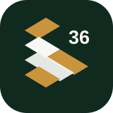

Parket36 design system
Базовые компоненты нового сайта
Изолированный визуальный каталог для переноса в Figma. Не является опубликованной страницей и не отправляет данные.

Button
Основное действие, альтернативное действие и спокойная ссылка-кнопка.
default
hover
focus
pressed
disabled
Badge
Короткие признаки доверия, статусы и нейтральные метки.
Паркет — специализация
Оценка по фото
Воронеж и область
Problem Card
Карточка помогает выбрать ситуацию, а не угадывать название услуги.
Service Card
Карточка объясняет результат услуги и поддерживает компактный или медиа-вариант.
Section Header
Единая иерархия для смысловых блоков сайта.
Диагностика
Можно ли восстановить ваш пол?
Ответ зависит от планок, основания, влажности и желаемого результата.
Следующий шаг
Начните с нескольких фотографий
Покажите общий вид и проблемный участок, чтобы мастер понял контекст.
Input
Поле формы с обязательной подписью, подсказкой и отдельным текстом ошибки.